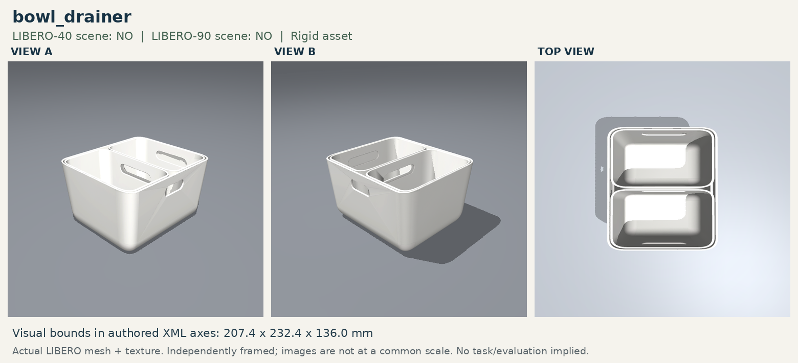

Five LIBERO-Object layouts with the basket replaced at the same pose by the two-compartment bowl drainer. All 25 original success and failure videos are available below.
One original episode loads only after a click; the queue advances in task/episode order.

Exact success definition
Success = object root in native left compartment OR object root in native right compartment. The parser-only combined target does not enlarge either native site. A simulator check returned: left center = success, right center = success, divider midpoint = failure.
The complete source target/distractor configuration is retained per task. The basket is the only removed foreground object. Five distinct goal-false states were evaluated per task with exact current-simulator masks.
BDRAIN_001
LIBERO_OBJECT_01 · GPU 6
4/5 · 80.0%
Task: Pick the alphabet soup and place it in either compartment of the bowl drainer.
Original source: Pick the alphabet soup and place it in the basket
Target and start:alphabet_soup_1 at (-0.12, -0.24)
Construction: The complete source Object layout is retained. The basket alone is replaced by the rigid bowl drainer at the same center (0.0, 0.26) and yaw.
Goal:in(alphabet_soup_1, bowl_drainer_1_any_compartment_region). Runtime success is native left_region OR right_region; the divider gap is rejected. The yellow policy target is the projected union of those same native sites.
Original five trials: success ep 0, 2, 3, 4; failure ep 1
Task: Pick the cream cheese and place it in either compartment of the bowl drainer.
Original source: Pick the cream cheese and place it in the basket
Target and start:cream_cheese_1 at (0.05, -0.10)
Distractors retained: alphabet soup, milk, tomato sauce, butter, orange juice
Construction: The complete source Object layout is retained. The basket alone is replaced by the rigid bowl drainer at the same center (0.0, 0.26) and yaw.
Goal:in(cream_cheese_1, bowl_drainer_1_any_compartment_region). Runtime success is native left_region OR right_region; the divider gap is rejected. The yellow policy target is the projected union of those same native sites.
Original five trials: success ep 1, 2, 3; failure ep 0, 4
Construction: The complete source Object layout is retained. The basket alone is replaced by the rigid bowl drainer at the same center (0.0, 0.26) and yaw.
Goal:in(tomato_sauce_1, bowl_drainer_1_any_compartment_region). Runtime success is native left_region OR right_region; the divider gap is rejected. The yellow policy target is the projected union of those same native sites.
Original five trials: success ep 1, 2, 4; failure ep 0, 3
Construction: The complete source Object layout is retained. The basket alone is replaced by the rigid bowl drainer at the same center (0.0, 0.26) and yaw.
Goal:in(butter_1, bowl_drainer_1_any_compartment_region). Runtime success is native left_region OR right_region; the divider gap is rejected. The yellow policy target is the projected union of those same native sites.
Original five trials: success ep 1, 2, 4; failure ep 0, 3
Construction: The complete source Object layout is retained. The basket alone is replaced by the rigid bowl drainer at the same center (0.0, 0.26) and yaw.
Goal:in(chocolate_pudding_1, bowl_drainer_1_any_compartment_region). Runtime success is native left_region OR right_region; the divider gap is rejected. The yellow policy target is the projected union of those same native sites.
Original five trials: success ep 0, 2, 4; failure ep 1, 3